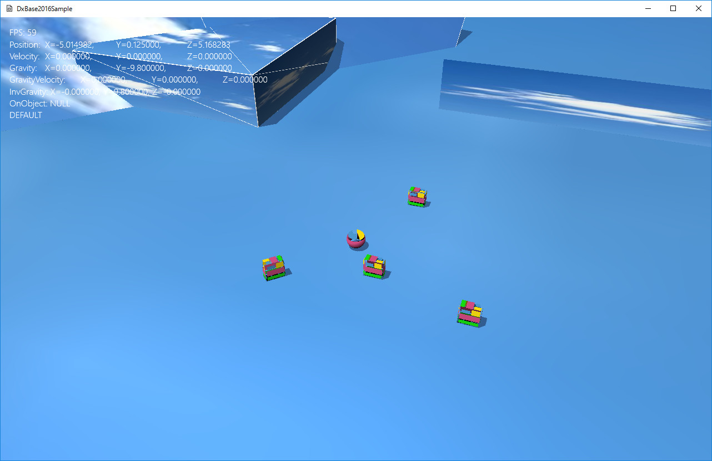
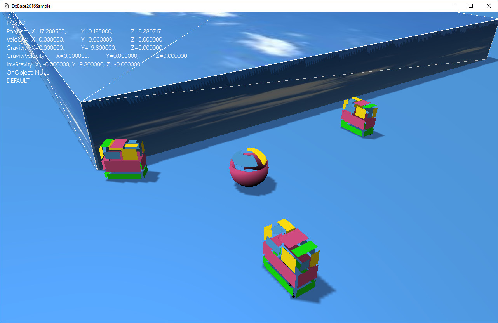

０．チュートリアル
００８．アップデート系コンポーネント
プレイヤーと様々なオブジェクト
ここでは、プレイヤーをはじめ、プレイヤーに影響を与える様々なオブジェクトを実装します。Tutorial008ディレクトリのソリューションをリビルドし、実行すると以下のような実行画面になります。
XBox360コントローラにより中央に配置されいている球体を、左スティック移動させることができます。Aボタンでジャンプします。チュートリアル004で説明したLoookAtCameraと組み合わせることによって、自由に向きを変えながら移動させることができます。

図0008a
プレイヤー
プレイヤーは前項で使用したプレイヤーの、OnLastUpdate()関数を修正したものです。ここでは、プレイヤーと衝突する平面であるHitTestSquareクラスとの関連を追加記述しています。Collisionコンポーネントを使わずに、プレイヤーと他オブジェクトとの衝突判定するヒントになるかもしれません。詳しくはソースを見てください。そのほかのオブジェクト
チュートリアル008にはプレイヤーのほかに、プレイヤーを追いかけるオブジェクトが4つ配置されています。内容は前項と同じです。そのほかにも、衝突判定する平面や、障害物球やカプセルなども配置されています。それぞれどのようなクラスか、参照してみましょう。プレイヤー以外のクラスは、Charactor.hとCharactor.cppに記述があります。
DxBase2016にはステアリングはこのサンプルで紹介したほかにも、いくつか用意されています。自作することも可能です。それらの紹介は、のちのサンプルで行います。
影を細かくする
このサンプルでは、影を細かくしています。GameStage::CreateViews()関数には、
//パラメータは4096.0fにしている
//影を細かくするとメモリを大量に消費するので注意！
CreateDefaultRenderTargets(4096.0f);
//影のビューサイズの設定。この値を小さくすると影が表示される範囲が小さくなる。
//値が小さいほうが影は細かくなる
//スタティック変数なので一度設定したらその値はステージを超えて保持される。
Shadowmap::SetViewSize(16.0f);


図0008b、図0008c
シャドウマップのサイズの4096.fは大きくしたほうが影が表示される領域が拡大されます。
影を細かくすると、そのぶん影が描画される領域が狭くなります。前項の設定では32.0fメートル四方（概算）内に影が描画されます。上記の設定ではこれを16.0f（16.0fメートル四方）にしているわけです。ですからその分、影が細かくなります。
作成するゲームの奥行や幅が狭い範囲であれば細かくするのもいいでしょうが、広い場合は、奥の方の影が切れるのがわかります。違和感のないサイズに調整するといいでしょう。